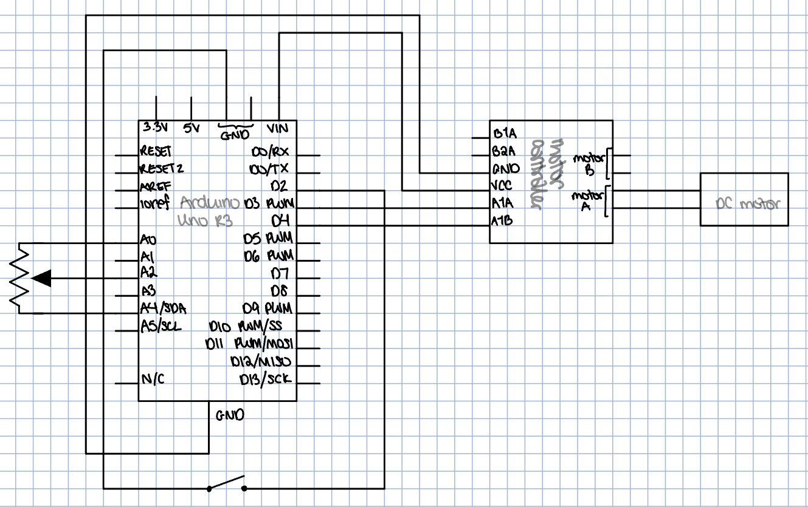
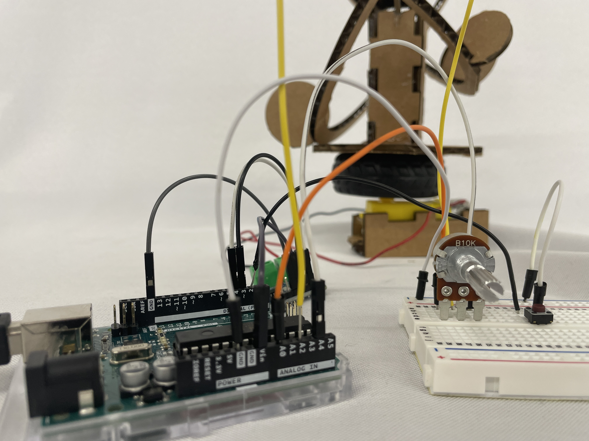
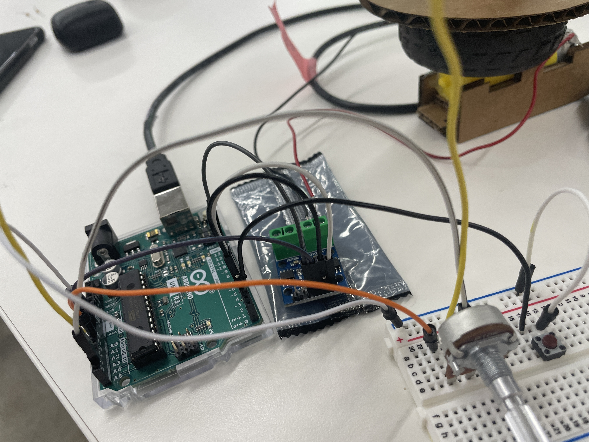

# Week 4: Microcontroller Programming
##Goal:
To write code that would accomplish the following: <br>
- turn on the system's motion with a button <br>
- control the speed of the system with a potentiometer
##Circuit:
I got inspiration from the potentiometer example from class and the tutorial from this [website](https://roboticsbackend.com/arduino-led-push-button-potentiometer/). Note that I made some changes because their version was for controlling an LED, and I was controlling the motion of my kinetic sculpture.
Here is my schematic:

Here are pictures of the circuit from a variety of angles:
<img src="IMG_5854.jpeg" alt="Uno pic" style="width:331px;height:250px;">
<img src="IMG_5856.jpeg" alt="Motor controller pic" style="width:331px;height:250px;">
<img src="IMG_5855.jpeg" alt="Breadboard pic" style="width:331px;height:250px;">
<img src="IMG_5852.jpeg" alt="Whole Circuit" style="width:331px;height:250px;">


##Code:
My code is made out of the potentiometer code from the class website, the button code, and contains modifications I made to link the two together.
Here is my code, in its entirety:
<pre><code class="language-arduino">
/* Code to run motor in one direction based on potentiometer reading, if a button has been pressed to provide power to the motor.
* Motor driver speed control on pin 3 (direction LOW by default)
* Potentiometer wired into A0, A2, and A4 on Arduino Uno
*/
// Setting pin numbers:
const int buttonPin = 2; // the number of the pushbutton pin
const int A1A = 3; // define pin 3 for A-1A (PWM Speed)
const int A1B = 4; // define pin 4 for A-1B (direction)
// Initializing variables:
int buttonState = 0; // variable for reading the pushbutton
void setup() {
// Initialize the pushbutton pin as an input:
pinMode(buttonPin, INPUT_PULLUP);
// Initialize pins to motor control as output:
pinMode(A1A, OUTPUT);
pinMode(A1B, OUTPUT);
analogWrite(A1A, 0); // start with the motors off
digitalWrite(A1B, LOW); // Initialize direction
// Initialize pins for potentiometer:
pinMode(A0, OUTPUT); // this will be GND for the potentiometer
pinMode(A4, OUTPUT); // this will be 3.3V for the pot
digitalWrite(A0, LOW);
digitalWrite(A4, HIGH);
}
void loop() {
// Read the state of the pushbutton value:
buttonState = digitalRead(buttonPin);
// If statement making it so that the motor and potentiometer can't turn on without the button being pressed
if (buttonState == LOW) {
int pot_value = analogRead(A2); // pot wiper is on A2
int motor_speed = map(pot_value, 100, 1023, 255, 100); // map motor_level to pot_value so that zero corresponds to lowest speed
analogWrite(A1A, motor_speed);
delay(1);
} else {
analogWrite(A1A, 0); // turns off the motor while the button is unpressed
}
}
</code></pre>

And here is a [link](../index.html).
<video width="262" height="500" controls>
<source src="deae3d27-7f0c-4f06-9cc2-96a3989e341e-0-ccfaa41e-0947-4dea-986f-a9634aa81698" type="video/mp4">
</video>